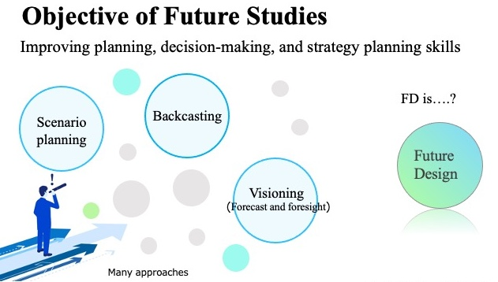
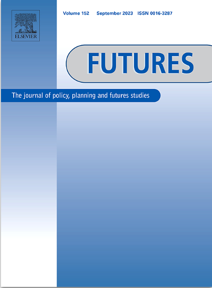
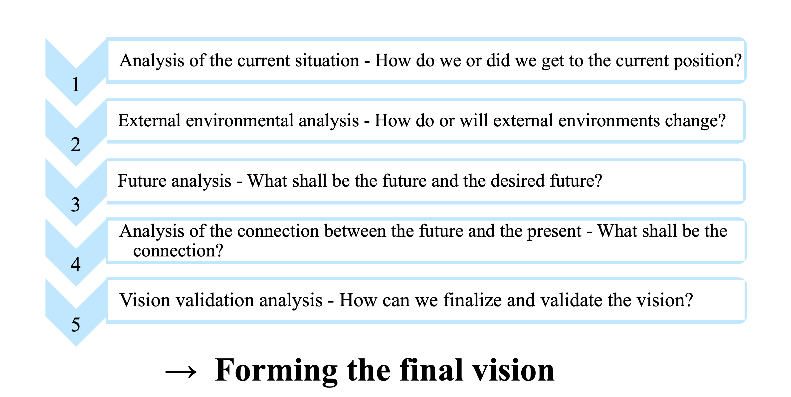
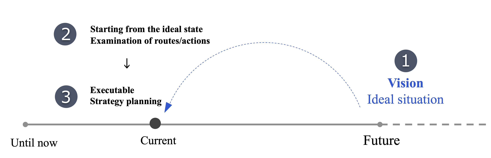
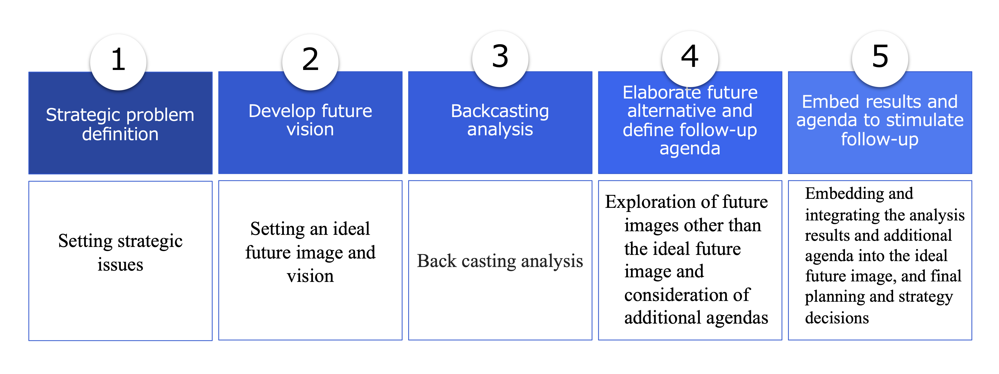

Future Studies
What is Future Studies
A study that seeks to systematically understand what can happen in the future, as well as the probability, certainty, and pattern of future events based on an understanding of events from the past to the present (Andersson, 2018).
The study of 3Ps, possible, probable and preferable futures (Marien, 2002).
Purpose of future studies
- According to Kuosa (2011), the purpose of future studies are thinking, understanding, and predicting the future and its changes in advance. More specifically,
- Creating rich future images, visions, and scenarios
- Improving planning, decision-making, and strategy planning skills
- Helping solve major problems common to humanity

Current status of future studies
- “Futures” is an academic journal on future studies that has been running for over 50 years.

Challanges:
- Many future studies approaches are mixed
- “Quantitative analysis” and “reproducibility’” are not considered important.
- Not sure if there is a standard approach
The most applied topics are:
Visioning
- What is Vision
According to Hornby (2013) and Pearson Education (2014) definition:
- Ability to see and its visible range
- Ability to think and plan the future through ideas and imagination of what it should be.
- Ability to think and plan the future through imagination
- What is Visioning
The process of developing and deriving a vision from the ideal future in order to improve planning, decision making, and strategic planning (O’Brien and Meadows, 2001).
Specific steps for forming a vision using Visioning
According to O’Brien and Meadows (2001):

Backcasting
- Establishing a future image, vision, and goals. It is a tool for formulating strategies that contribute to achieving these goals and solving problems (Kuosa, 2011).

Backcasting has 5 steps:

- There is not enough literature on whether Backcasting is applied in business settings and whether it is effective.
Backcasting: example